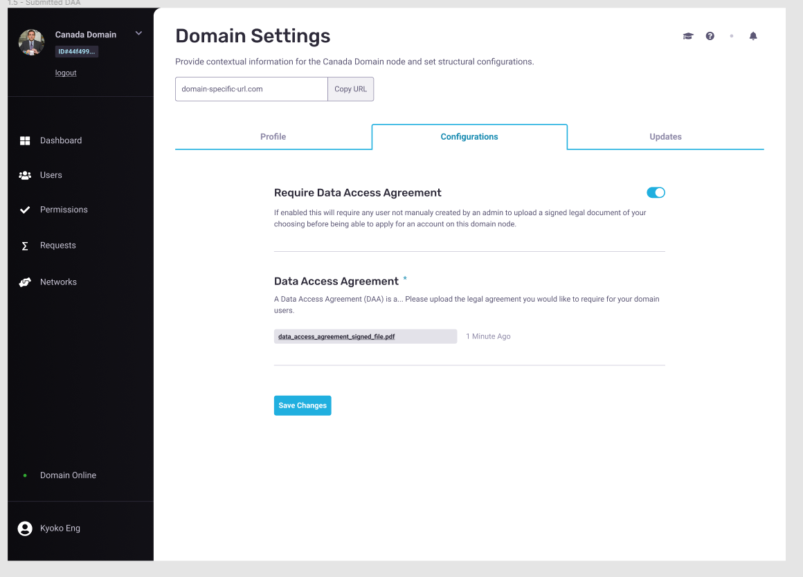
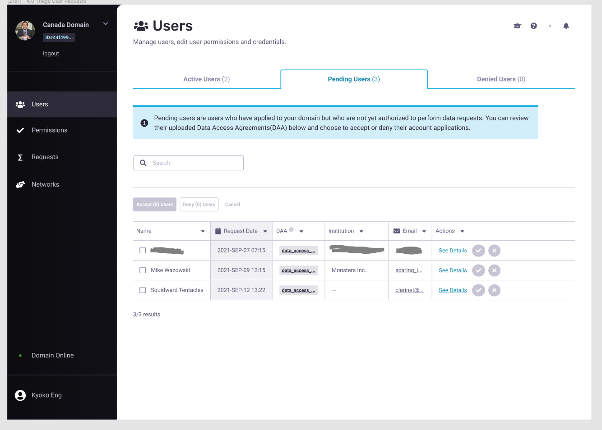
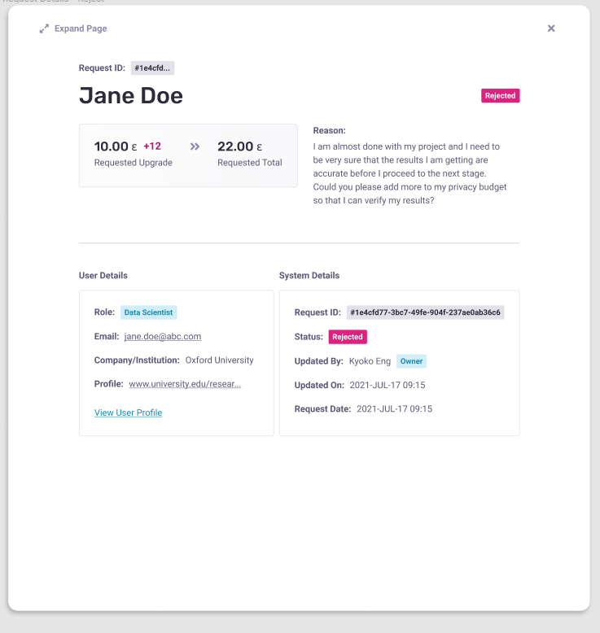
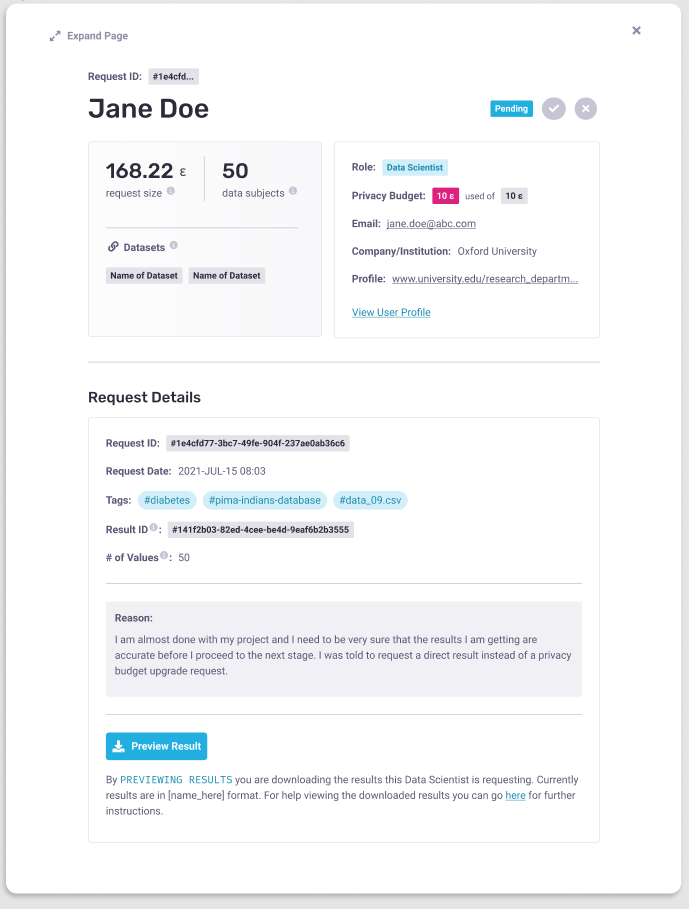
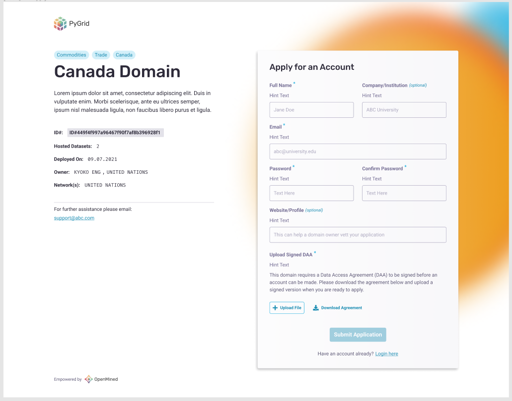
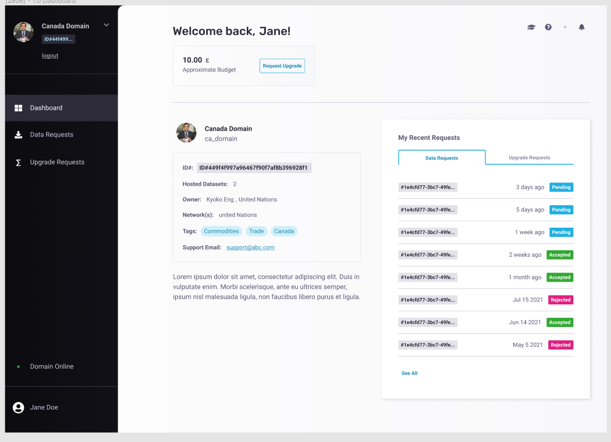
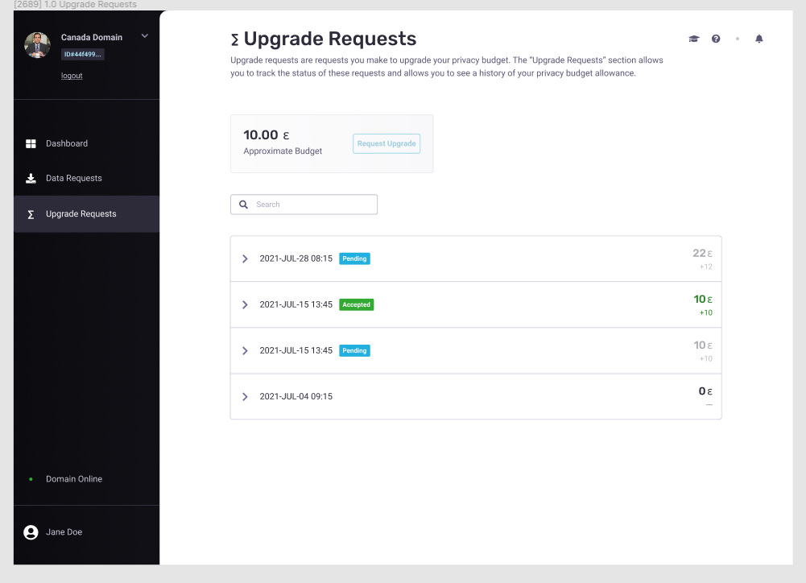
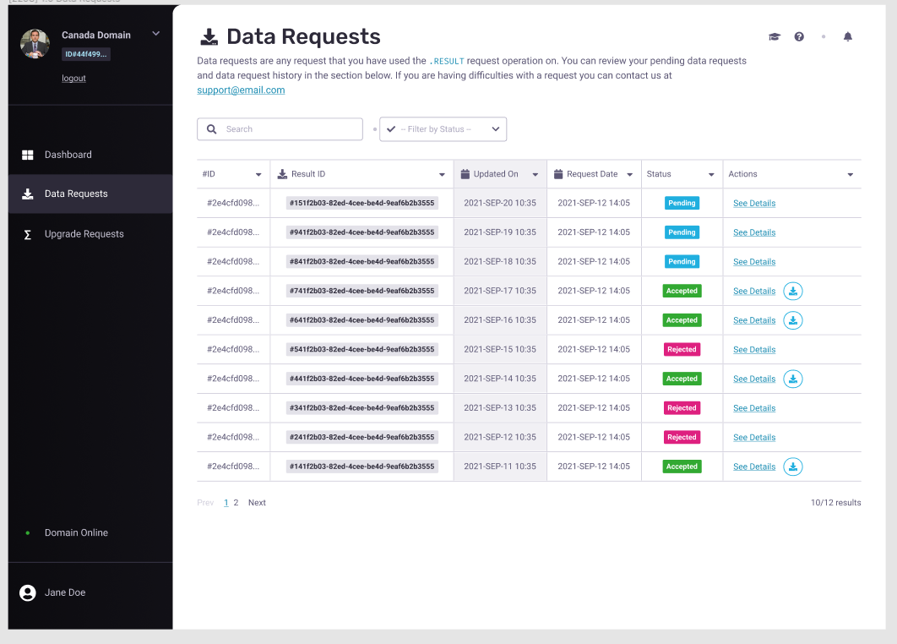

01 // Aligning the Team
As this group was at the early stages of product and was unfamiliar with human-centered design methodologies I started by creating & facilitating an Impact workshop and a Define Audience workshop to help leadership and the current working group define and align on the organization's Theory of Change. The outcomes from both workshops were as follows:
01
A clear mantra that we could use within the org to align our teams on our intended impact; “1000x more data unlocked in every scientific field”
02
Three key metrics that we could then use to benchmark success of the product.
03
Clusters of OpenMined current activity that we then formed into 3 formal programs that could feed impact efforts.
04
A more specific definition of product audience groups broken down by what their role is in the product versus what their role is in their industry.
05
User ecosystem maps that outline current assumptions on who we think influences the user audience groups and what resource and education gaps they may have in regards to being able to use our product.
06
Definitions on main user group key shifts which track where we think users are currently in being able to do what they need to do and where they need to be in order for impact to be made.
02 // Understanding the User
Now that we had established clear audience segments and the foundation to our theory of change I wanted to get an understanding of our users' day to day. The group we wanted to understand the most were those in academic research who had gathered data (Data Owners) to advance their field’s research, but who had to make sure they were good stewards of what was released with that data to protect participants in the study (Data Subjects). Qualitative research was conducted where I interviewed principal investigators at Lausanne University Hospital and had weekly calls with an SME at the Technical University of Munich (TUM) from which our education team and leadership team were walked through the typical flow of the research proposal process and how privacy concerns played a role in that process.
The artifacts produced by this phase were flow charts of the current research proposal process along with target audience sheets that capture sentiments around user problems (link to template here).
03 // Ideating on a Testable MVP
Discussing what we learned from the user research exercises, we narrowed our problem set to focus on how our product could streamline the triaging process behind saying yes or no to a data release request. At this point we felt that we had enough internal alignment to go forward with creating a testable MVP. For this group it felt best to ideate via Jeff Patton's storymapping framework with slight alterations to better fit the current problem set. Through weekly sessions I held storymapping workshops with the engineering lead, our internal SME, and leadership to determine the core activities our key users would want to conduct with our product. We then iterated to determine priority, sectioning off ideas as MVP requirements versus “nice to haves” which would be ideas that we could revisit later for future prototypes. The outcome of these activities was a core userflow mapped out for engineering and design to then use in the build process.
04 // Building a Testable MVP
How can Data Access Agreements and Differential Privacy be incorporated into a request triage process that makes it easier to track what is being released and requested from your org's data?
The MVP we made proposed that the triaging process could be streamlined by giving external researchers with signed DAA’s access to preliminary automatic results obfuscated through a Differential Privacy algorithm. This process would have two primary users; the Data Owner who would be triaging requests and the semi-trust Researcher which in the product we generally call the Data Scientist who would be making the requests. Data Scientists who have signed a DAA would form together their projects by remotely computing off the data using what is called a privacy budget. In this case a privacy budget would act similarily to a credit limit, a Data Scientist would be allowed to have a certain amount of visibility into the dataset given by the Data Owner, any result that went past that limit would get obfuscated by the Differential Privacy algorithm. This would allow more accuracy in the forming of projects without having to be on the premises of where the data was held and without having to give a copy of the data away. After forming their projects on the obfuscated results, Data Scientists could then submit a “Data Release” request whereby they ask the Data Owner for the final non-obfuscated result. The Data Owner triaging workflow proposed was as follows:
01
After a domain node has been deployed, fill out the public facing domain profile information (this will be the information seen by Data Scientists trying to apply to be users of your domain node).
02
If your organization requires a Data Access Agreement(DAA) to be signed, then change your domain settings so that DAA upload is required upon registration. Upload the current DAA form(s) Data Scientists will need to download and sign.
03
Upload datasets to the node. Define who the data subjects are and the perceived min-max ranges of attribute columns in the dataset. This is required to make the differential privacy mechanism work. (UI work on this activity was excluded from this prototyping round see later projects)
04
Review applications sent by users (Data Scientists) who want to become a part of your domain node.
05
Assign privacy budgets to accepted users (Data Scientists) so that they can begin their research. Triage future requests made by Data Scientists to upgrade this initial budget.
06
Triage requests made by Data Scientists to release direct results from their computations.
// Manage Domain Settings
// Review Data Scientist Applications
// Triage Privacy Budget Upgrade Requests
// Triage Data Release Requests
Data Scientist Workflow
01
Go to the URL of your institute's, program’s, or of a consortia’s node. If you have an account then login.
02
If you don't have an account then fill out and submit the node’s user application.
03
Accepted applicants will be notified via email after which they can login to the node via both the web app and via using PySyft within the coding environment of their choice (i.e. Jupyter Notebook, Visual Studio)
04
Use PySyft in a Jupyter Notebook to compute off of allowed data using your allocated privacy budget.
05
Use PySyft in a Jupyter Notebook to submit upgrade requests to your privacy budget or to request direct result downloads.
06
Use the PyGrid web app to track the status and history of submitted requests. Be able to view and download approved results.
// Apply to a Domain
// Data Scientist Dashboard
// View Privacy Budget Upgrades
// View Released Results
Summary
Next Steps
After 3 months of collaboration and iteration our team was able to align on the big picture view of what impact we wanted to make towards the privacy problem; was able to define a theory of change of how our product build efforts, our education efforts, and our partner pilot efforts could come together to support our intended impact; was able to produce user research artifacts that we could then use to guide us in the build process; and was able to build an e2e prototype of our web app ready to be tested with users.
The next steps from here were to recruit potential users and begin testing our prototype to see if our assumptions were going in the right direction or if we needed to go back to the drawing board. You can read about how we tested this prototype in the next portfolio item “PyGrid 0.6.0 // Early Access Group”.